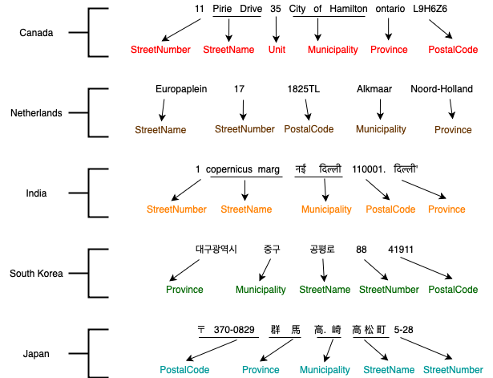

Training Guide¶
In addition to parsing addresses out-of-the-box, Deepparse allows you to retrain the pre-trained models to fit your data and use cases.
In the world of machine learning, this is what’s referred to as fine-tuning, which can make it easier to obtain well-performing
models more efficiently and with less data.
Since fine-tuning models can be tricky, this section of the documentation provides some guidelines and insights that may be useful to adapt our models successfully. See Retrain a Pretrained Model for a coding example of how to retrain our models.
Note
We provide practical recommendations for fine-tuning, but you may have to try multiple retraining configurations to achieve an optimal result. If you have difficulty adapting our models to your use case, open an issue on the Deepparse GitHub page.
A few use cases may lead you to want to retrain Deepparse’s models. Whether you wish to obtain a better performance on a single or multiple countries that our models weren’t trained on, or your data and address schemes require a more complex architecture, or your dataset’s tag structure, differs from ours; Deepparse’s retraining features accommodate all these use cases and more.
In practice, our models were trained on 20 countries. They demonstrated very accurate results on all of them, so we advise you to use our models without retraining unless you wish to predict different tags (e.g., StreetNumber, …). Also, suppose you want to retrain our models to perform better on countries outside of the 20 used in the original training set. In that case, you can look at our dataset which includes addresses from 240 countries.
There are two main concerns to keep in mind when fine-tuning a model: the model’s convergence (i.e., its ability actually to learn from the new data)
and the possibility of catastrophic forgetting (i.e., losing the model’s previous knowledge after training on the new data).
Learning Successfully¶
Making a model converge is as much an art as a science since it often requires a lot of experimentation and parameter tuning. In the case of fine-tuning, the models have already developed a base knowledge of the task that they were trained on, which gives them an edge. This is especially true in the case of Deepparse since the task you are fine-tuning remains the same (i.e. parsing addresses). However, there are a couple of points to consider to obtain favourable results:
Make sure you have enough data: deep learning models are notorious for being pretty data-hungry, so unless you have enough data, the models will have a hard time learning. Since Deepparse’s models have already been trained on a few million addresses, the need for data is mitigated for fine-tuning. However, it is recommended to use at least a few thousand examples per new country when retraining.
Prepare your dataset: once you are done pre-processing your dataset, you must convert it to a format which can be loaded into a
DatasetContainer. See the Dataset Container section for more details. Also, make sure to keep a portion of your data apart to test the performance of your retrained models.Use a proper learning rate: if you are unfamiliar with gradient descent and neural network optimization, you probably don’t know what a
learning rateis. But have no fear; you do not need a Ph.D. to retrain deepparse’s models. All you need to understand is that a learning rate is a value that guides the training process. When it comes to fine-tuning, it is recommended to use a learning rate lower than the one used for the first training, in this case, we recommend using a learning rate lower than0.1. This parameter can be changed in theretrain()method.Train for long enough: Deepparse’s models are based on the LSTM neural network architecture, which may require a few more training epochs than recent architectures for fine-tuning. The number of epochs would depend on the use case, but allowing the models to train long enough is important. Perhaps start somewhere between 5 and 10 epochs and increase the number of epochs if needed.
Use a GPU: this is not required for retraining, but it is highly recommended to use a GPU if your device has one to speed up the training process. This can be specified in the
AddressParserconstructor.
Do Not Forget!¶
As mentioned above, catastrophic forgetting can happen when fine-tuning machine learning models. This is because the models’ internal parameters are modified to accommodate the new task/data, which can impact their ability to be appropriate for the previous task/data.
There are many fancy ways to mitigate catastrophic forgetting when fine-tuning models. Still, given the task and data that Deepparse handles, we recommend including some of the previous data when constructing your retraining dataset. The amount of addresses to keep would vary depending on the number of new addresses, but somewhere between 1% and 10% would be a good start.
Another approach that can help reduce the effect of forgetting is freezing part of the model. Check out
the retrain() method for more details on how to freeze different parts of our models during retraining.
Note
If you’re only interested in the models’ performance on the new data, you should not concern yourself with catastrophic forgetting.
About The Data¶
Deepparse’s models learn in a supervised manner; this means that the data provided for retraining must be labelled (i.e. the tag of each element in the
address needs to be specified). This is also required when you want to retrain our models with your own custom tags. Each word in the address must
have a corresponding tag. If you are using custom tags, they must be defined in the retrain() method under
the prediction_tags argument. Here are some examples of properly labelled addresses:

Note
If the main objective of retraining is to introduce different tags, it might be a good idea to freeze the model layers. This will speed up the retraining process and will probably yield good results, especially if you are training on the same countries as the original training set.
In case your data is mostly or exclusively unlabeled, you can retrain on the labelled portion and then use the obtained model to predict labels for a few more randomly chosen unlabeled addresses, verify and correct the predictions and retrain with the newly labelled addresses added to the retraining dataset. This will allow you to incrementally increase the size of your dataset with the help of the models. This is a simple case of active learning.
Modifying the Architecture¶
The retrain() method allows you to change the architecture of the models using the seq2seq_params
argument. This can be useful if you need a more complex model or a lighter model, for example. However, if you
change the models’ architecture, a completely new model will be retrained from scratch. This
means that all the previous knowledge that the initial model had will disappear.